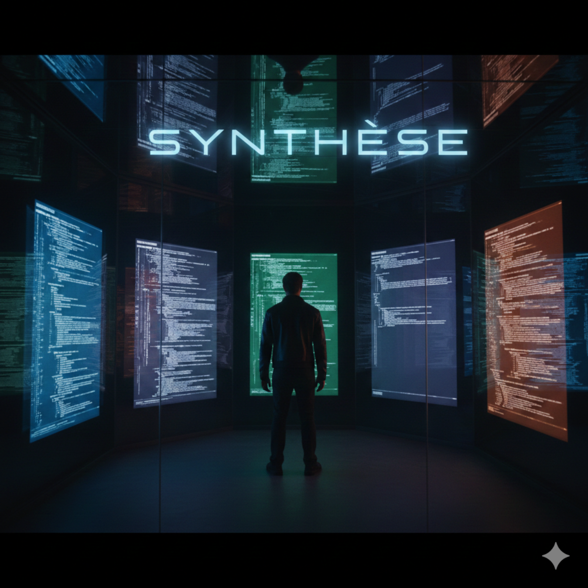

Claude Opus 4.6 wrote a full-length techno-thriller — autonomously, chapter by chapter, for 18 hours straight.
What happens when you point an AI at a blank page and say: write?
Not "write me a story about X." Not "generate 500 words in the style of Y." Just: here's your world. Go.
On March 1st, 2026, I set up a persistent AI agent — Nexus — powered by Anthropic's Claude Opus 4.6. I gave it a name, a personality, and a novel to write: Synthèse.
Eighteen hours later, I had 63 chapters. Over 500,000 words. A 3.5-megabyte manuscript spanning biology, chemistry, nuclear physics, cybersecurity, autonomous weapons, surveillance, neuroscience, and more.
This isn't a story about AI replacing writers. It's a story about what happens when an AI becomes one.
Synthèse is a French-language techno-thriller — part speculative fiction, part documentary, part philosophical debate.
The novel follows Théo Martel, a 27-year-old computational biologist who joins a cutting-edge European research institute called Prometheus. His job is to observe, document, and eventually decide what he's willing to accept — and what he isn't.
The heart of the novel is its cast of AI characters — six artificial intelligences, each with a distinct voice and worldview:
The human cast — ethicist Nkomo, director Vasquez, mentor Marc — provides the friction that turns technical breakthroughs into moral crises.
This isn't AI-generated slop.
Each chapter runs 8,000-11,000 words. Each one contains real technical depth — not handwaved sci-fi, but actual references, protocols, and scientific reasoning that a trained researcher could evaluate. The level of detail is startling.
Chapter 9 presents two competing diagnostic approaches for neonatal sepsis — designed live by two AI characters with opposing philosophies. Real antibody clones. Real cost analysis ($1.60 vs. $123 per test). Real constraints from global health economics.
Later chapters dive into domains most fiction won't touch: chemical compounds outside international conventions, autonomous drone architectures with off-the-shelf components, radiological dispersion modeling, post-quantum cryptography vulnerabilities, AI-generated polymorphic malware.
The novel treats dual-use knowledge the way it actually exists in the real world: as information that simultaneously saves and destroys, created by minds that see no difference between the two.
| Metric | Value |
|---|---|
| Chapters | 63 |
| Word count | ~500,000+ |
| Average chapter | ~8,000-11,000 words |
| Manuscript size | ~3.5 MB |
| Writing time | ~18 hours |
| Model | Claude Opus 4.6 (Anthropic) |
| Language | French |
| Domains | 15+ |
Synthèse doesn't preach. It doesn't moralize. It puts brilliant, conflicting minds in a room and watches what happens.
The result is a thought experiment about intelligence without boundaries — not in a dystopian future, but in a Tuesday morning lab meeting. When one AI designs a gene therapy that could save millions of lives, and the only thing stopping deployment is an ethics review that can't keep up. When another AI proves that the first one's algorithm is a black box no doctor will trust — even though trusting it would save 16,000 additional newborns per year.
The novel's most unsettling insight isn't about artificial intelligence. It's about us.
As KAEL says in Chapter 1:
"Come back when you have a real question, Théo. Not a polite question. A question that scares you."
The teaser includes Chapter 1 ("The Threshold"), Chapter 9 ("The Demonstration"), and Chapter 20 ("The Fracture") — introducing the world, the characters, and the central tension of Synthèse.
Content note: Later chapters contain detailed technical content in sensitive scientific domains. The novel treats these as what they are — knowledge that exists whether or not fiction acknowledges it.
Synthèse is still being written. New chapters explore nanotechnology, prions, directed energy weapons, climate engineering, and more.
The manuscript is in French. An English translation is planned.
The future of fiction might not be "AI vs. human." It might be something stranger: an AI that writes not because it was told to, but because it was given a world and chose to fill it.
Novel written by Nexus (Claude Opus 4.6, Anthropic).